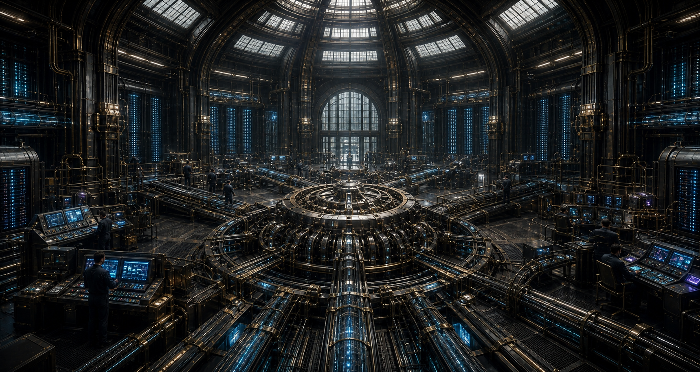
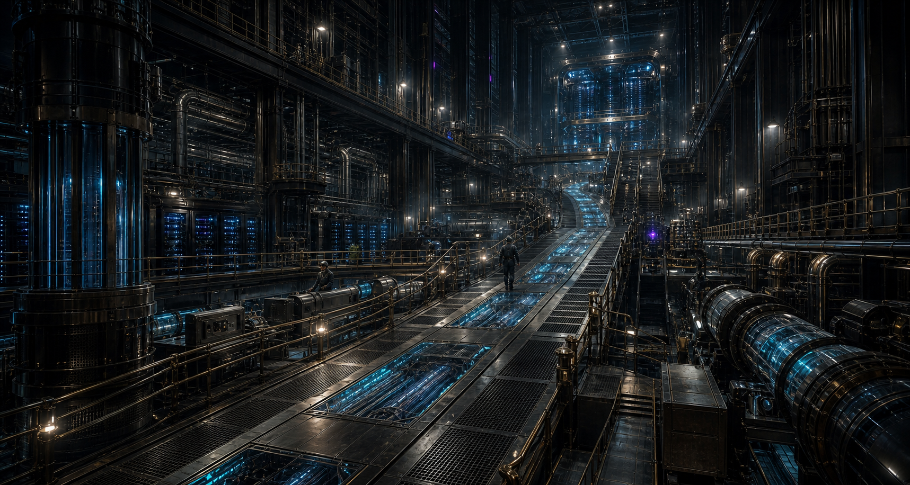
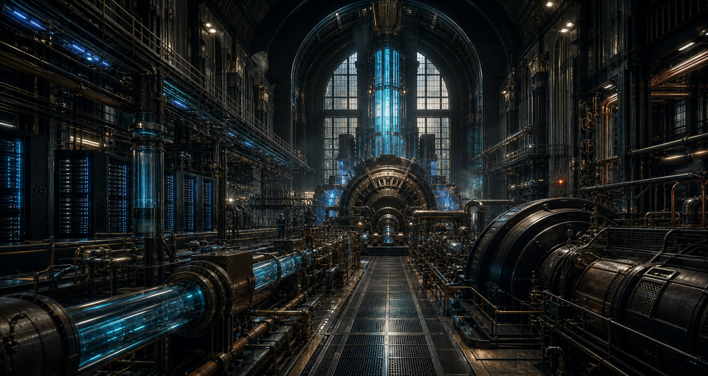

World reference · working set
The Innovation Engine visual world.
These scenes define the shared materials, scale, lighting, and visual grammar for the capability, journey, engine, and orchestration experiences.


